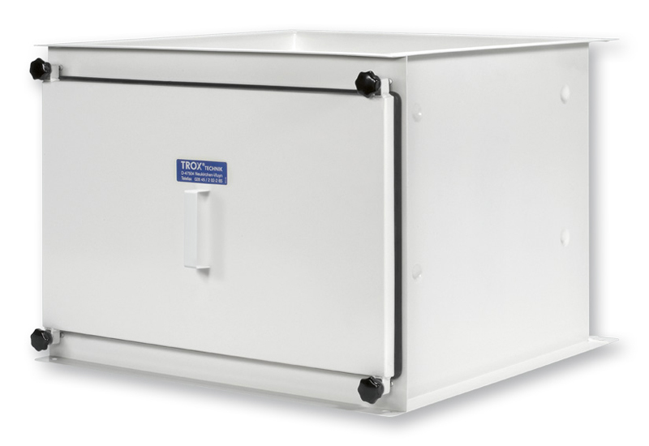

- Применение
- Канальная фильтрация приточного и вытяжного воздуха; медицина, лаборатории, фармацевтика и технологические помещения.
- Фильтры
- Mini Pleat filter panels (MFP), Mini Pleat filter cells (MFC), активированный уголь (ACF).
- Материал
- Листовая сталь с деконтаминируемым покрытием RAL 9010 или нержавеющая сталь.
- Монтаж
- Горизонтальное или вертикальное положение корпуса.
- Герметизация
- Прижим фильтрующего элемента винтовым механизмом; герметичная крышка корпуса с профилированным уплотнением.
Точная комплектация определяется проектом: расходом воздуха, требуемым классом фильтра, материалом корпуса, схемой обслуживания и требованиями к испытаниям/валидации.